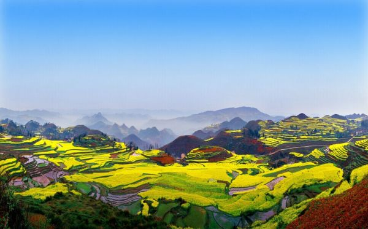

贵州省，简称“黔”或“贵bai”，地处中du国西南腹地，与重zhi庆、四川、湖南、云南、广dao西接壤，是西南交通枢纽。世界知名山地旅游目的地和山地旅游大省，全国首个国家级大数据综合试验区，国家生态文明试验区，内陆开放型经济试验区。
贵州境内地势西高东低，自中部向北、东、南三面倾斜，全省地貌可概括分为：高原、山地、丘陵和盆地四种基本类型，高原山地居多，素有“八山一水一分田”之说，是全国唯一没有平原支撑的省份。属亚热带湿润季风气候，四季分明、春暖风和、雨量充沛、雨热同期。
贵州是古人类发祥地之一，远古人类化石和远古文化遗存发现颇多。早在24万年前，就有人类栖息繁衍，已发现石器时代文化遗址80余处。观音洞旧石器遗址被正式命名为“观音洞文化”，对研究中国旧石器时代的起源和发展具有重要的科学价值。
贵州河流处在长江和珠江两大水系上游交错地带，有69个县属长江防护林保护区范围，是长江、珠江上游地区的重要生态屏障。全省水系顺地势由西部、中部向北、东、南三面分流。
